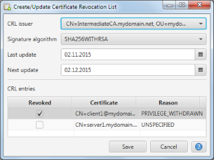

Create/Update Certificate Revocation List
This dialog allows the creation and updating of Certificate Revocation List (CRL). The application always assumes
the default CRL setup that the issuing certificate is the signer of the CRL. Therefore the revocation status of
all certificates issued by the currently selected certificate can be set.

In the top part of the dialog the signature algorithm as well as the CRL dates (last update and next update) are
defined. The bottom part of the dialog shows the issued dialogs with their current revocation status. The latter
can be edited and the revocation reason can be set.